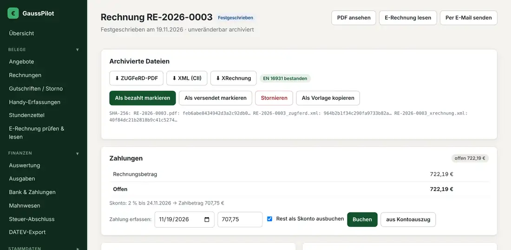
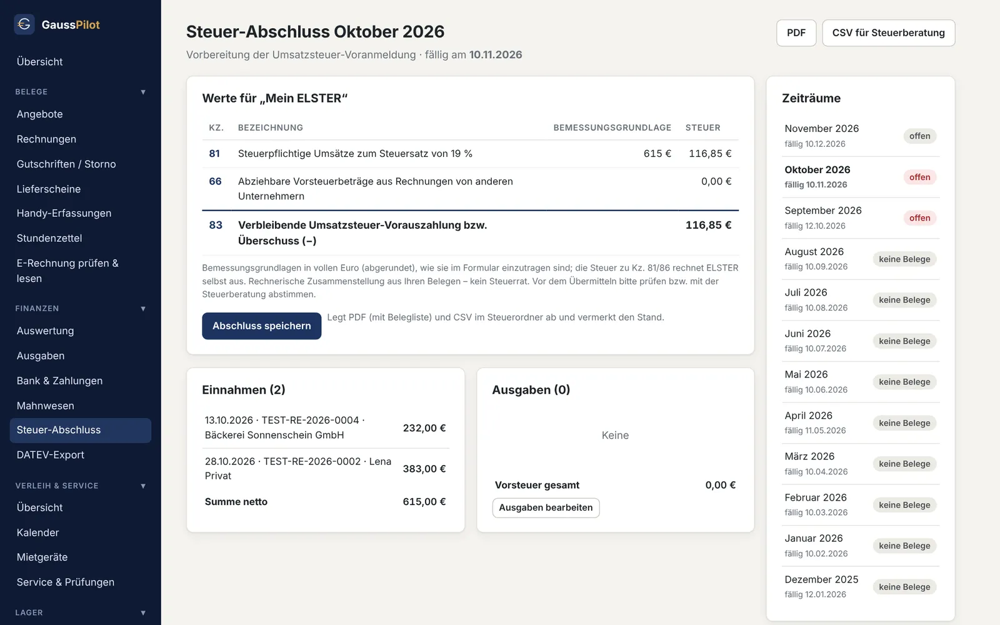
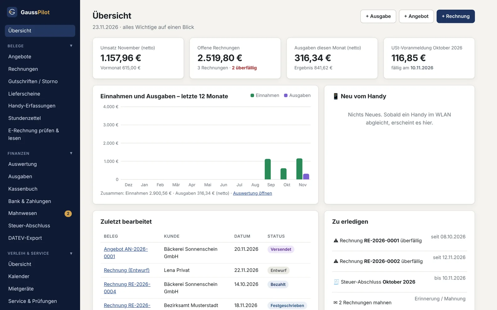

Einblicke
So sieht die Arbeit mit GaussPilot aus – Bildschirmfotos mit Beispieldaten.



GaussPilot ist ein Rechnungsprogramm für kleine Betriebe und das Handwerk. Es prüft jede E-Rechnung nach EN 16931, bereitet die Umsatzsteuer-Voranmeldung vor und läuft auf Ihrem eigenen PC.
Testversion anfragenFunktionen ansehen
Vom Angebot bis zum Steuerberater – in einem Programm, ohne Abo-Cloud.
ZUGFeRD/Factur-X und XRechnung 3.0 aus einem Datensatz – mit eingebauter Prüfung gegen die offiziellen CEN- und KoSIT-Regeln.
Eigenes Design mit Logo und Briefpapier, QR-Code zum Bezahlen, Versand per E-Mail, Abschlags- und Schlussrechnungen.
Stunden, Material, Spesen und Aufmaße offline erfassen – im Büro mit einem Klick in die Rechnung übernehmen.
Kontoauszug einlesen, Zahlungen automatisch zuordnen, Skonto, Erinnerungen und Mahnungen mit Verzugszinsen.
Läuft lokal auf Ihrem PC, Anmeldung mit 2-Faktor, tägliche Sicherung – auf Wunsch verschlüsselt auf externe Platte oder Cloud.
DATEV-Export (SKR03/SKR04), Rechnungsausgangsbuch und Belege – fertig sortiert je Jahr.
So sieht die Arbeit mit GaussPilot aus – Bildschirmfotos mit Beispieldaten.


GaussPilot ermittelt aus Ihren Belegen die Werte für die Umsatzsteuer-Voranmeldung – monatlich oder vierteljährlich, Soll- oder Ist-Versteuerung.
GaussPilot ist eine rechnerische Hilfe und ersetzt keine Steuerberatung. Bitte stimmen Sie den Einsatz vorab mit Ihrer Steuerberatung ab.
Sie möchten GaussPilot ausprobieren oder haben Fragen? Schreiben Sie uns – Sie bekommen eine Testversion mit Beispieldaten.
DesignArtLab.shop@gmx.de